X3415–X3514¶
Vertex Conjugates, Saragossa Points & Neuberg Cubic Intersections
X3415–X3514 (Vertex Conjugates, Saragossa Points & Neuberg Cubic Intersections) — 16 representative centers (from 100 in collection) constructed on acute reference triangle \((a, b, c) = (5, 6, 7)\) with unit baseline AB = \(1\).¶
Group Preamble — Vertex Conjugates
Suppose that U =\(u : v : w\) and X =\(x : y : z\) (trilinears) are points not on a sideline of ABC. Let
\(f(a,b,c) = a/[a^{2}vwyz - ux(bw + cv)(bz + cy)]\).
The U-vertex conjugate of X is the point
\(f(a,b,c) : f(b,c,a) : f(c,a,b)\).
For a geometric interpretation, let T be the vertex triangle of the circumcevian triangles, AUBUCU and AXBXCX, of U and X; viz., the sidelines of T are AUAX, BUBX, CUCX. Then T is perspective to ABC, and the perspector is the U-vertex conjugate of X.
The definition of vertex conjugate allows X = U. To extend the geometric interpretation to the case that X = U, as X approaches U, the vertex triangle approaches a limiting triangle which we call the tangential triangle of U, a triangle perspective to ABC with perspector U-vertex conjugate of U.
The appearance of a row I, J, K in the following tables signifies that the Xi-vertex conjugate of Xj is X(K).
I J K 1 1 56 1 2 3415 1 3 84 1 4 3417 1 6 2163 1 7 3418 1 9 3420 1 19 3422 1 56 1 1 57 3423 1 58 58 2 2 25 2 3 3424 2 4 3425 2 6 1383 2 32 3407 2 251 251 2 523 23 3 3 64 3 4 4 3 6 3426 3 7 3427 3 20 3346 3 40 3345 3 56 945 3 64 3 3 84 1 3 1490 3447 3 1498 3348 3 2131 3183 3 3182 3354 4 4 3 5 5 3432 6 6 6 7 7 3433 8 8 3434 9 9 1436 10 10 3437
Among properties of vertex conjugation are these:
X3-vertex conjugation maps the Darboux cubic to the Darboux cubic. The appearance of (i,j) in the following list means that Xi is on the Darboux cubic and that Xj = X3-vertex conjugate of Xi:
(1,84), (3,64), (4,4), (20,3346), (40,3345), (1490,3347), (1498,3348), (2131,3183), (3182,3354)
The fixed point of U-vertex conjugation is the 1st Saragossa point of U. (Saragossa points are defined just before X1166.) The appearance of (i,j) in the following list means that the 1st Saragossa point of Xi is Xj:
(1,58), (2,251), (3,4), (4,54), (5,1166), (6,6), (7,3449), (8,3450), (9,3451), (21,961), (55,57)
If U' and X' are the isogonal conjugates of U and X, resp., then the isogonal conjugate of the U-vertex conjugate of X is the anticomplement of the midpoint of U' and X'. (Randy Hutson, July 11, 2019)
The U-vertex conjugate of U is the isogonal conjugate of the anticomplement of the isogonal conjugate of U. (Randy Hutson, January 17, 2020)
X3415-VERTEX CONJUGATE OF X2
X3416ISOGONAL CONJUGATE OF X3415
X3417-VERTEX CONJUGATE OF X4
X3418-VERTEX CONJUGATE OF X7
X3419ISOGONAL CONJUGATE OF X3418
X3420-VERTEX CONJUGATE OF X9
X3421ISOGONAL CONJUGATE OF X3420
X3422-VERTEX CONJUGATE OF X19
X3423-VERTEX CONJUGATE OF X57
X3424-VERTEX CONJUGATE OF X3
X3425-VERTEX CONJUGATE OF X4
X3426-VERTEX CONJUGATE OF X6
X3427-VERTEX CONJUGATE OF X7
X3428ISOGONAL CONJUGATE OF X3427
X3429-VERTEX CONJUGATE OF X10
X3430ISOGONAL CONJUGATE OF X3429
X3431-VERTEX CONJUGATE OF X6
X3432-VERTEX CONJUGATE OF X5
X3433-VERTEX CONJUGATE OF X7
X3434ISOGONAL CONJUGATE OF X3433
X3435-VERTEX CONJUGATE OF X8
X3436ISOGONAL CONJUGATE OF X3435
X3437-VERTEX CONJUGATE OF X10
X3438-VERTEX CONJUGATE OF X13
X3439-VERTEX CONJUGATE OF X14
X3440-VERTEX CONJUGATE OF X15
X3441-VERTEX CONJUGATE OF X16
X3442-VERTEX CONJUGATE OF X17
X3443-VERTEX CONJUGATE OF X18
X3444-VERTEX CONJUGATE OF X37
X3445-VERTEX CONJUGATE OF X56
X3446-VERTEX CONJUGATE OF X513
X3447-VERTEX CONJUGATE OF X523
X3448ISOGONAL CONJUGATE OF X3447
X34491st SARAGOSSA POINT OF X7
X34501st SARAGOSSA POINT OF X8
X34511st SARAGOSSA POINT OF X9
X3452ISOGONAL CONJUGATE OF X3451
X34531st SARAGOSSA POINT OF X10
X3454ISOGONAL CONJUGATE OF X3453
X3455-VERTEX CONJUGATE OF X14
X3456-VERTEX CONJUGATE OF X18
X3457-VERTEX CONJUGATE OF X15
X3458-VERTEX CONJUGATE OF X16
X3459ISOGONAL CONJUGATE OF X195
X3460-CEVA CONJUGATE OF X1
X3461ISOGONAL CONJUGATE OF X3460
X3462-CEVA CONJUGATE OF X4
X3463ISOGONAL CONJUGATE OF X3462
X3464-CEVA CONJUGATE OF X1

X3465-CEVA CONJUGATE OF X484
X3466ISOGONAL CONJUGATE OF X3465
X3467ISOGONAL CONJUGATE OF X3336
X3468-CEVA CONJUGATE OF X3336
X3469ISOGONAL CONJUGATE OF X3468
X3470TRILINEAR PRODUCT X74*X1749
X3471ISOGONAL CONJUGATE OF X3470
X3472-CEVA CONJUGATE OF X3345
X3473ISOGONAL CONJUGATE OF X3472
X3474INTERSECTION OF LINES X4X_46 AND X7X_55
X3475INTERSECTION OF LINES X1X_4 AND X7X_55
X3476INTERSECTION OF LINES X1X_4 AND X8X_56
X3477ISOGONAL CONJUGATE OF X3475
X3478ISOGONAL CONJUGATE OF X3476
X3479ISOGONAL CONJUGATE OF X1337
X3480ISOGONAL CONJUGATE OF X1338
X3481INTERSECTION OF LINES X3X_2120 and X4X_2121
X3482ISOGONAL CONJUGATE OF X3481
X3483INTERSECTION OF LINES X1X_1157 and X4X_484
X3484INTERSECTION OF LINES X3X_2120 and X4X_54
X3485INTERSECTION OF LINES X1X_4 AND X7X_21
X3486INTERSECTION OF LINES X1X_4 AND X8X_21
X3487INTERSECTION OF LINES X1X_4 AND X3X_7
X3488INTERSECTION OF LINES X1X_4 AND X8X_405
X3489ISOGONAL CONJUGATE OF X627
X3490ISOGONAL CONJUGATE OF X628
X3491INTERSECTION OF LINES X1X_295 AND X4X_69
X3492INTERSECTION OF LINES X4X_83 AND X32X_695
X3494INTERSECTION OF LINES X1X_87 AND X3X_2053
X3495INTERSECTION OF LINES X32X_983 AND X39X_256
X3496INTERSECTION OF LINES X1X_32 AND X4X_9
X3497ISOGONAL CONJUGATE OF X3496
X3498INTERSECTION OF LINES X3X_83 AND X194X_263
X3498 lies on the cubic Z(X384).
X3499INTERSECTION OF LINES X3X_695 AND X6X_76
X3500INTERSECTION OF LINES X1X_295 AND X3X_238
X3501INTERSECTION OF LINES X1X_39 AND X4X_9
X3502ISOGONAL CONJUGATE OF X3494
X3503ISOGONAL CONJUGATE OF X3495
X3504INTERSECTION OF LINES X25X_385 AND X32X_1613
X3505INTERSECTION OF LINES X32X_695 AND X98X_783
X3505 lies on the cubic Z(X385).
X3506INTERSECTION OF LINES X2X_98 AND X32X_694
X3507INTERSECTION OF LINES X1X_2 AND X32X_2319
X3508INTERSECTION OF LINES X1X_6 AND X76X_1423
X3509INTERSECTION OF LINES X1X_32 AND X2X_7
X3510INTERSECTION OF LINES X1X_76 AND X6X_43
X3510 lies on the cubic Z(X385).